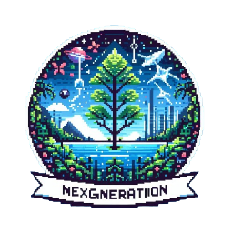
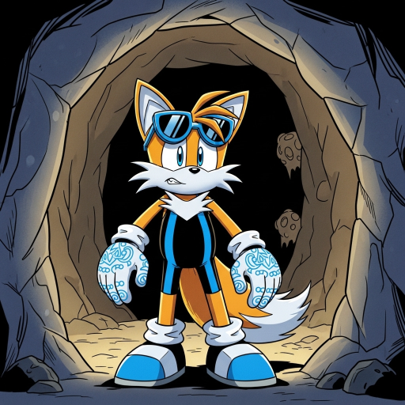
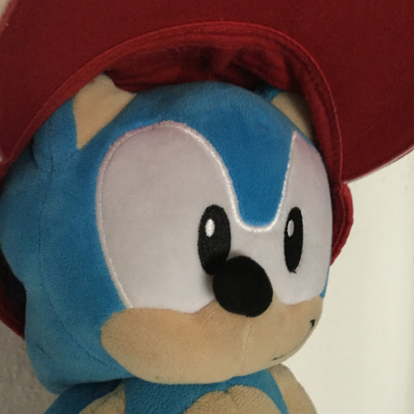
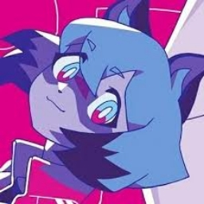

Sobre mí
Desarrollo y Moderación: Soy Gaspy, un apasionado desarrollador de bots y moderador de servidores de Discord. Me especializo en la configuración, gestión y administración de comunidades online, asegurando un entorno positivo y bien organizado.
Música e Intereses: Como amante de la música, tengo una especial fascinación por la música japonesa, incluyendo:
- J-pop y música Vocaloid
- Artistas icónicos como Hatsune Miku, Kasane Teto y ADO
- Clásicos de la década del 2010
- La Oreja de Van Gogh y otros artistas diversos
Experiencia: A lo largo de mi trayectoria, he contribuido al crecimiento y desarrollo de múltiples comunidades de Discord, implementando sistemas de moderación efectivos y desarrollando soluciones personalizadas mediante bots.
Servidores y roles
Ordenados de más importante a menos importante (según roles/impacto).
-

nexgeneration Fundador · Developer (Discord)
Rol: Fundador y desarrollador en Discord. Nexgeneration es un servidor de minecraft en el cual he trabajado en la creación de bots y la configuración del Discord.
-

La cueva de quillo Administrador
Rol: Administrador. Moderación y administración del servidor.
-

El BitSonico Community Manager · Developer
Rol: Manager y desarrollador. Configuración de bots y soporte técnico.
-

El sotano de ImKodo Manager
Rol: Manager. Apoyo en organización y moderación.
-

TheCrafting community Manager
Rol: Manager. Gestión de eventos y administración de la comunidad.


Contacto
• Discord: the_gaspy_games